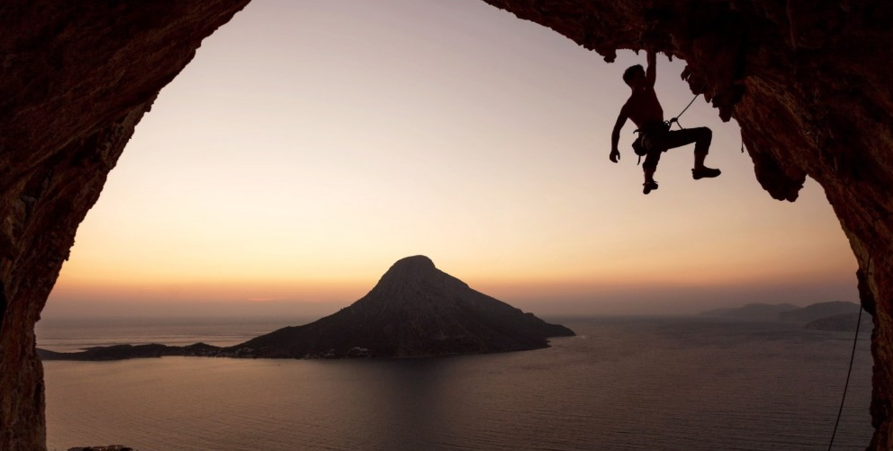

X MARATÓ D'EMPÚRIES
L'Escala-Empúries
Catalunya | Girona
42.2 km en 2 h. 45 min. 46 s.
ZEGAMA AIZKORRI MENDI MARATOIA
Montaña en Zegama
Euskadi | Guipuzkoa
42.2 km en 5 h. 30 min. 35 s.
ELS
TOSSALS
Montaña en L'Espunyola
Catalunya | Barcelona
14 km en 1 h. 17 min. 53 s.
L'ÚLTIM MAQUI
Montaña en Olvan
Catalunya | Barcelona
19 km en 1 h. 41 min. 19 s.
SANT SILVESTRE
DEL BISAURA
Asfalto running en Montesquiu
Catalunya | Barcelona
4.5 km en 17 min. 45 s.